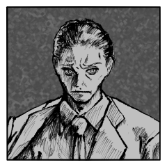

GM
薊と仁一郎は同時攻撃につき1D100を。
出目の低い方から処理します。

鬼越仁一郎
1d100 (1D100) ＞ 57
芥切薊
SG>=5 （判定：香術） (SG@12#2>=5) ＞ 7[2,5] ＞ 7 ＞ 成功
鬼越仁一郎
■奥義
《天命にして呪いに非ず》
指定特技：千里眼の術
効果 ：判定妨害
演出 ：単なる、しかし決定的な不運が訪れる。
芥切薊
SG>=8 （判定：見敵術） (SG@12#2>=8) ＞ 7[1,6] ＞ 7 ＞ 失敗
辻秋葉
SG#3>=9 （判定：人脈） (SG@12#3>=9) ＞ 8[3,5] ＞ 8 ＞ 失敗
GM
失敗ですね。
判定妨害が通り、薊の命中判定が失敗。
芥切薊
SG>=5 （判定：火術） (SG@12#2>=5) ＞ 11[5,6] ＞ 11 ＞ 成功
GM
では次の仁一郎の命中判定のファンブル値が+1です。
命中判定をどうぞ。
鬼越仁一郎
2D6>=5 （判定：千里眼の術） (2D6>=5) ＞ 7[2,5] ＞ 7 ＞ 成功
芥切薊
SG>=8 （判定：見敵術） (SG@12#2>=8) ＞ 10[5,5] ＞ 10 ＞ 成功
鬼越仁一郎
蟻地獄の流動する地面は、一つの綻びへと招き寄せる。
鬼越仁一郎
足元は途端に大きく崩落し、地中に開いた虚ろへ二人を飲み込む。
鬼越仁一郎
そう、芥切薊だけでなく、鬼越仁一郎も共に。
芥切薊
崩れる足元の立てる土煙の向こうに、鬼越の姿を見る。
芥切薊
炎の香。不知火のそれは死の臭いを避けがたく纏っている。
鬼越仁一郎
墓穴を掘っても、たやすく埋まらないからこその不知火か。
鬼越仁一郎
しかし、その火が届かないことを知っている。
鬼越仁一郎
回避行動をとることも、いささかの同様もなく、まっすぐ芥切薊に斬りかかる。
鬼越仁一郎
あたかも、たまたま降り注いだかのような落石が盾となり、その火を遮る。
芥切薊
遮られれば、深追いはしない。もとより、刹那の空中戦。
芥切薊
手元の炎だけを残し、それを半ば纏うようにして、鬼越の視界を遮りにかかる。
鬼越仁一郎
刃を通せれば、確実に芥切薊を貫く道筋は見えていた。しかし炎に凌がれる。
鬼越仁一郎
何度逃れても待ち受け、地に埋めて消し去るのみ。
[ GM ] ラウンド : 3 → 4
鬼越仁一郎
2D6>=5 （判定：掘削術） (2D6>=5) ＞ 9[4,5] ＞ 9 ＞ 成功
GM
成功ですね。
では奈落のプロットも同時にお願いします。
GM
それではラウンド４、プロットオープンよろしくお願いします！
[ 辻秋葉 ] がダイスシンボルを公開。出目は 3 です。
[ 鬼越仁一郎 ] がダイスシンボルを公開。出目は 4 です。
[ 鬼越仁一郎 ] がダイスシンボルを公開。出目は 3 です。
[ 芥切薊 ] がダイスシンボルを公開。出目は 5 です。
[ 三登河六衛門 ] がダイスシンボルを公開。出目は 5 です。
GM
◆ラウンド４
プロット５：薊、六衛門 ４：仁一郎 ３：秋葉
奈落：３
GM
プロット３の秋葉は奈落の判定を。
掘削術からです。
辻秋葉
SG#3>=8 （判定：登術） (SG@12#3>=8) ＞ 7[2,5] ＞ 7 ＞ 失敗
[ 辻秋葉 ] 忍具 : 1 → 0
[ 辻秋葉 ] 忍具 : 1 → 0
辻秋葉
SG#3>=8 （判定：登術） (SG@12#3>=8) ＞ 6[1,5] ＞ 6 ＞ 失敗
GM
失敗ですね。
秋葉は逆凪を受け、ファンブルエリアへと移動。
GM
薊と六衛門は同時攻撃。
1D100をお願いします。出目の低い方から処理しましょう。
三登河六衛門
■奥義
《召喚『三途の川』》
指定特技：言霊術
効果 ：範囲攻撃／滅び／人数限定
鬼越仁一郎
2D6>=8 （判定：千里眼の術） (2D6>=8) ＞ 9[3,6] ＞ 9 ＞ 成功
芥切薊
瘴炎坩堝 指定特技：香術
範囲攻撃/滅び/人数限定
鬼越仁一郎
2D6>=7 （判定：隠形術） (2D6>=7) ＞ 6[3,3] ＞ 6 ＞ 失敗
三登河六衛門
SG#5>=7 （判定：遊芸） (SG@12#5>=7) ＞ 11[5,6] ＞ 11 ＞ 成功
GM
ではそれぞれRPをどうぞ。
三登河さんからかな。
三登河六衛門
「は、はは。まだ……利き手は残っていますよ！」
三登河六衛門
まだ動く右手が、難なく冥府の水を招く。
三登河六衛門
濁流は鬼越と、体勢を崩した秋葉に向かう。
鬼越仁一郎
いくつも重ねた配置、盤面が、その濁流に飲み込まれ、押し流されていく。
鬼越仁一郎
「この日の本の荒ぶる水を治めてきた。引くわけにはいかんな」
鬼越仁一郎
地面を裂いて水の行き先を作り、それを逸らす。
三登河六衛門
荒ぶる濁流は、まるで最初からそこを流れることが決まっていたかのように逸れる。
三登河六衛門
「……お見事。冥府の川すら制してみせるとは」
三登河六衛門
「しかし、荒ぶる水はどこにでもある。かの大蛇の首が八本あったように」
三登河六衛門
「……いつまで持つでしょうね？」そう言いながらも、息は荒い。
鬼越仁一郎
「だからこそ、その儀を完成させようとするのか、比良坂」
辻秋葉
向こうに助けたつもりはないだろうが、助かった。
芥切薊
炎は言葉を交わす二人をまとめて呑もうとする。
三登河六衛門
「人、ですか」炎に向かって顔を上げる。
鬼越仁一郎
濁流がすべてを押し流した後。その炎から身を凌げる場所はもはやない。
三登河六衛門
「否。私は支流。比良坂という大河の末端に過ぎません」迫る熱に臆した様子はなく。
三登河六衛門
「——皮肉なこと。今度は私がこうすることになるとは」
三登河六衛門
死の気配を纏った炎に向けて、複数の札を、まとめて投げつける。
三登河六衛門
「護国は比良坂の願い。それは私の願いでもあるということ」
鬼越仁一郎
「運命を捻じ曲げるのはいささか繊細さにかける、が……」
鬼越仁一郎
「それに人々が生かされてきたのもまた事実」
三登河六衛門
「そう、いつか滅びるかもしれない。それでも」
三登河六衛門
「我々比良坂は、因果を曲げてでも、それは『今ではない』と言い続けねばならないのです」
鬼越仁一郎
「見事な啖呵だ。ならば、凌いでみせよ！」
三登河六衛門
「はは、はははは。その通り。あなたたちがどこまで行けるか……示してみせなさい！」
鬼越仁一郎
2D6>=5 （判定：掘削術） (2D6>=5) ＞ 11[5,6] ＞ 11 ＞ 成功
GM
成功ですね。
秋葉は逆凪につき回避判定不可能。
接近戦ダメージ1点が入ります。
[ 辻秋葉 ] 忍術 : 1 → 0
GM
忍術に1点ダメージ。
土竜吼によるダメージの発生につき仁一郎のプロットが3に移動。
鬼越仁一郎
2D6>=5 （判定：千里眼の術） (2D6>=5) ＞ 4[1,3] ＞ 4 ＞ 失敗
GM
了解です。
プロット４から続けてRPをお願いしましょうか！
鬼越仁一郎
地を引き裂いて作った即席の水路、その堤防を切り開く。
鬼越仁一郎
再び流れ出す冥府の川が、辻秋葉へと流れ出す。
鬼越仁一郎
「それは生きるものの宿命だ。天命というよりは、摂理」
辻秋葉
死を薊や村の人達に押し付けることを理解していて。
鬼越仁一郎
「海に至った水は、それが水の果てではない」
鬼越仁一郎
「お前は帰るところを失い、あるいは途方もない世界を彷徨うかもしれぬ」
鬼越仁一郎
水にもがく辻秋葉に駆け寄り、刃を振るう。
辻秋葉
このまま出ていってしまえば、もう二度と帰れない場所。
辻秋葉
「ちょっと年食ってて外を知ってるからってごちゃごちゃと……」
辻秋葉
「俺はなあ！ そんなのだって何にも経験してねえんだぞ！」
辻秋葉
もがきながらも、振るわれた刃を拳で薙ぎ払う。
辻秋葉
「何にも知らねえ！ 外がどれだけ広いのか！ 何があるのか！」
鬼越仁一郎
弾かれる。斜歯忍軍の技術の粋を持ってしても、その拳には拮抗しえない。
辻秋葉
「後悔とか、寂しさとか。なったらその時の俺が考える」
辻秋葉
もがく手に枝が触れる。それを手がかりに、死の川から逃れる。
辻秋葉
今考えるべきは先の心配ではなく、この場を生き延びることだ。
鬼越仁一郎
俺が奪うのは未来ではない。お前と芥切薊との、短い、しかしかけがえのない時間だ。
[ GM ] ラウンド : 4 → 5
鬼越仁一郎
2D6>=5 （判定：掘削術） (2D6>=5) ＞ 12[6,6] ＞ 12 ＞ スペシャル(【生命力】1点か変調一つを回復)
[ 芥切薊 ] 忍具 : 2 → 1
鬼越仁一郎
2D6>=5 （判定：掘削術） (2D6>=5) ＞ 11[5,6] ＞ 11 ＞ 成功
GM
プロットが決まりましたら申告と宣言をお願い致します。
[ 辻秋葉 ] がダイスシンボルを公開。出目は 2 です。
[ 芥切薊 ] がダイスシンボルを公開。出目は 4 です。
[ 三登河六衛門 ] がダイスシンボルを公開。出目は 5 です。
[ 鬼越仁一郎 ] がダイスシンボルを公開。出目は 6 です。
[ 鬼越仁一郎 ] がダイスシンボルを公開。出目は 4 です。
GM
◆ラウンド５
プロット６：仁一郎 ５：六衛門 ４：薊 ２：秋葉
奈落：４
GM
プロット４，薊は奈落の判定をお願いします。
掘削術です。
芥切薊
SG>=6 （判定：壊器術） (SG@12#2>=6) ＞ 6[2,4] ＞ 6 ＞ 成功
鬼越仁一郎
■奥義
《天命にして呪いに非ず》
指定特技：千里眼の術
効果 ：判定妨害
演出 ：単なる、しかし決定的な不運が訪れる。
芥切薊
SG>=8 （判定：見敵術） (SG@12#2>=8) ＞ 5[1,4] ＞ 5 ＞ 失敗
辻秋葉
SG#2>=9 （判定：人脈） (SG@12#2>=9) ＞ 11[5,6] ＞ 11 ＞ 成功
芥切薊
SG#4>=5 （判定：火術） (SG@12#4>=5) ＞ 3[1,2] ＞ 3 ＞ ファンブル
鬼越仁一郎
SG@2#6>=5 （判定：掘削術） (SG@2#6>=5) ＞ 5[2,3] ＞ 5 ＞ ファンブル
[ 鬼越仁一郎 ] 忍具 : 2 → 1
鬼越仁一郎
SG@2#6>=5 （判定：掘削術） (SG@2#6>=5) ＞ 6[2,4] ＞ 6 ＞ ファンブル
GM
ファンブルにつき失敗。
刃隠で射撃戦ダメージ1点が入ります。
[ 鬼越仁一郎 ] 謀術 : 1 → 0
鬼越仁一郎
流動する地面が芥切薊を捉え、光に並ぶ速度で追いつき、刃を振るう。
鬼越仁一郎
鬼越仁一郎は機巧の忍でもなければ、技芸の忍でもなく、はたまた怪力の忍でもない。
鬼越仁一郎
その人知を超えた炎を引き裂くことはできない。
芥切薊
首を刎ねようとすれば、畢竟、刃の間合いに入らねばならない。
鬼越仁一郎
だから読む。見る。火が途絶える僅かな隙を。人が呼吸する僅かな一拍を。
鬼越仁一郎
しかし、絶えず燃える炎の奥には、手を伸ばすことは出来ない。
辻秋葉
SG#2>=10 （判定：野戦術） (SG@12#2>=10) ＞ 7[3,4] ＞ 7 ＞ 失敗
芥切薊
瘴炎坩堝 指定特技：香術
範囲攻撃/滅び/人数限定
三登河六衛門
SG#5-1>=7 （判定：遊芸） (SG-1@12#5>=7) ＞ 6[1,5]-1 ＞ 5 ＞ 失敗
GM
では、薊の奥義の滅びにより六衛門の奥義効果が打ち消し。
三登河六衛門
招く。招く。渡守は招く。ひたすらに水を。川を。
三登河六衛門
もはやなりふり構ってはいられない。冷たい水に自らもまた冷えながら、
三登河六衛門
鬼越との応酬の隙をついて、芥切を、そして秋葉を、幾度めかの濁流が襲う。
芥切薊
だん、と地を蹴って鬼越の傍らを離れ、その水の起こりである三登河のもとへ。
三登河六衛門
じゅうじゅうと音を立てて濁流が蒸発していく。水が届かない。
三登河六衛門
業の炎と冥府の水、いずれも死の気配を帯びながら対極のものが打ち消しあう。
三登河六衛門
「……ッ、死の中にありながらなお、燃えてみせますか」
三登河六衛門
「遠からず渡ると知りながら、それでも？」
三登河六衛門
喉の奥で笑う。「ならば、地獄の釜まで、三途の川を引かねばなりますまい」
GM
プロット４と２、
双方できることがないと見做しGMからパスとします。
辻秋葉
SG#2>=5 （判定：遊芸） (SG@12#2>=5) ＞ 4[1,3] ＞ 4 ＞ 失敗
[ GM ] ラウンド : 5 → 6
鬼越仁一郎
2D6>=5 （判定：掘削術） (2D6>=5) ＞ 10[5,5] ＞ 10 ＞ 成功
GM
では各位、プロットが決まりましたら申告のほどお願い致します。
GM
クライマックスフェイズ第６ラウンド、
プロットの開示をお願いします！
[ 辻秋葉 ] がダイスシンボルを公開。出目は 3 です。
[ 鬼越仁一郎 ] がダイスシンボルを公開。出目は 5 です。
[ 芥切薊 ] がダイスシンボルを公開。出目は 4 です。
[ 鬼越仁一郎 ] がダイスシンボルを公開。出目は 4 です。
[ 三登河六衛門 ] がダイスシンボルを公開。出目は 5 です。
GM
◆ラウンド６
プロット５：仁一郎、六衛門 ４：薊 ３：秋葉
奈落：５
GM
奈落は５。
プロット５の仁一郎と六衛門は奈落の判定を。
[ 鬼越仁一郎 ] がダイスシンボルを5 に変更しました。
鬼越仁一郎
2D6>=5 （判定：掘削術） (2D6>=5) ＞ 7[1,6] ＞ 7 ＞ 成功
[ 三登河六衛門 ] 忍具 : 1 → 0
[ 三登河六衛門 ] 器術 : 0 → 1
三登河六衛門
SG#5>=6 （判定：壊器術） (SG@12#5>=6) ＞ 7[2,5] ＞ 7 ＞ 成功
GM
仁一郎と六衛門は同時攻撃。
1D100で出目の低い方から処理します。
芥切薊
SG#4>=5 （判定：火術） (SG@12#4>=5) ＞ 11[5,6] ＞ 11 ＞ 成功
GM
成功！
仁一郎は命中判定のファンブル値＋１です。
鬼越仁一郎
SG#6>=5 （判定：掘削術） (SG@12#6>=5) ＞ 6[3,3] ＞ 6 ＞ ファンブル
GM
ファンブル。仁一郎は逆凪。
刃隠による射撃戦ダメージが１点。
[ 鬼越仁一郎 ] 器術 : 1 → 0
鬼越仁一郎
斜歯忍軍の傑作である土竜吼は、通常ではありえない刹那での連撃を可能とする技術。
鬼越仁一郎
芥切薊の首を獲るには、ここで２つを奪うにはありえない。
鬼越仁一郎
それを通すには、相手を超える速度であり続けなければならない。
鬼越仁一郎
先程の一撃を失した時点で、この一撃もまた、通るか通らぬかの『賭け』をする以外にはないと視えている。
芥切薊
髪ひと筋ほどの近くまで、死の気配を引き寄せる。
芥切薊
死は隣にある。不知火の炎の。そして、もはやこの男の、すぐ隣に。
芥切薊
「今このとき、俺は俺の意志によって立っている」
鬼越仁一郎
「徒花だ。徒花であろうとも、だからこそ、か」
三登河六衛門
奥義を使用します。対象は芥切薊と、辻秋葉。
三登河六衛門
■奥義
《召喚『三途の川』》
指定特技：言霊術
効果 ：範囲攻撃／滅び／人数限定
辻秋葉
SG#3>=10 （判定：野戦術） (SG@12#3>=10) ＞ 5[2,3] ＞ 5 ＞ 失敗
GM
いいでしょう。
任意のタイミングで自分の秘密を公開し、回想シーン演出をお願いします。
芥切薊
斜歯を抜けたあの日、俺にはまだ、確たる望みはなかった。
芥切薊
それは、脱臭されたラボそのものでも、資料に埋もれる生活にでも、己が身と炎を使って繰り返す実験にでもない。
芥切薊
あの頃の姉と同じような、斜歯の施設しか知らんようなガキを使い潰していくのに疲れた。
芥切薊
そうして降り、道を逸れれば、どうなるかなどわかっていたのだ。
芥切薊
案の定、わかり切っていた通りに追手はかかり、俺はどこどこまでも逃げた。
芥切薊
きれいな場所だった。ずっと遠くまで、淡い光が輝いているみたいだった。
芥切薊
触れて初めて、俺は降りた先のことを考え始めた。
芥切薊
それは単なる感傷で、言われた通りに徒花の望みだろう。
芥切薊
芥切薊 秘密
斜歯忍軍から逃げる途中、荒んでいくあなたの心を救ったのは初めて見た広大な海の光景だった。
村から出たことがないという辻秋葉に斜歯忍軍にいた頃の自分を重ねたあなたは、自らの救いとなった海の風景を彼女にも見せてやりたいと思っている。
あなたの【本当の使命】は辻秋葉に海を見せることである。
芥切薊
SG#4+3>=9 （判定：見敵術） (SG+3@12#4>=9) ＞ 7[2,5]+3 ＞ 10 ＞ 成功
GM
三登河の奥義は無効化されます。
RPをお願いします。
三登河六衛門
比良坂の秘薬を噛み砕きながら、足元の奈落を飛び越え。
三登河六衛門
砕けた左腕の痛みは秘薬の効果で消えた。両手で印を結び、札をさばきながら。
三登河六衛門
鬼越と芥切の鍔迫り合い、その決着の隙に飛び込む。
三登河六衛門
馬鹿の一つ覚えと言われようとも、目の前に立ちはだかる男が、それこそ地獄の底から炎を得ているのだとしても、これしかない。
三登河六衛門
その炎ごと、全て、贄たる二人を押し流す。
三登河六衛門
三登河の周囲から死の川が顕現する。芥切と、秋葉に向かって。
辻秋葉
一度見切った技ならば、とそう簡単にはいかない。
辻秋葉
こちらが生き延びるのに必死ならば、向こうも逃すまいと必死だ。
辻秋葉
銃を取りその奥義を妨害しようとするが、銃弾にも構わず幾度目かの濁流が現れる。
三登河六衛門
最早あとはない。冥府ギリギリにまで近づいての召喚だった。
三登河六衛門
「ええ、海は、生命の源は、さぞあたたかいでしょう。しかし」
三登河六衛門
「私はあなたたちを逃すわけにはいかない。……お覚悟を」
三登河六衛門
冥府の水を引くことは、三登河をも冥府に近づける。しかし、芥切の言う通りに。
三登河六衛門
生と死の境界で、冥府の水を汲むだけの者。
辻秋葉
自分のいる世界を何も知らずにいた秋葉を照らし、導いた光。
三登河六衛門
「……ッ！」業の炎が、より死の気配の濃い炎が、冥府の水を蒸発させ、あるいは逆流させる。
三登河六衛門
続けて襲う熱と火。己の肉と血が焦げる匂い。
三登河六衛門
最早濁流の制御はできなかった。逆流した水で姿勢を崩し、転がるようにしながら、炎から距離を取る。
三登河六衛門
「……こんな、ことが……！」立ち上がりながら、ぎり、と奥歯を噛んだ。
芥切薊
瘴炎坩堝 指定特技：香術
範囲攻撃/滅び/人数限定
GM
了解です。感情修正と回想シーンで-1+3。
では六衛門は任意のタイミングで秘密を公開し、回想シーンの演出をお願いします。
三登河六衛門
物心ついた時には、比良坂としての振る舞いが身についていた。
三登河六衛門
三登河家は代々、三途の川と結びついてきた。六文銭を暗喩する六衛門の名前と共に。
三登河六衛門
そうして長いこと、比良坂に所属している家系だ。
三登河六衛門
私は、本気で思う相手を、比良坂のためなら殺すことができた。
三登河六衛門
情と使命を、いずれも、本気で取り組む資質があった。
三登河六衛門
最初に殺したのは中学の頃、御斎のスパイだったか。
三登河六衛門
その資質があったからこそ、この村に派遣された。
三登河六衛門
私なら大丈夫。そう思っていた。そう思っていた。そのはずなんだ。
三登河六衛門
あの娘が、この期に及んで私をセンセーと呼ぶからか。
三登河六衛門
私は、比良坂の三登河六衛門だ。そうでなくては。
三登河六衛門
三登河六衛門 秘密
あなたは日ノ本を守る『降魔結界の儀』を完成させるため、辻秋葉に接触して密かに呪いを施してきた。メインフェイズ中に辻秋葉の【生命力】が１点以上減少したうえで、贄として『天ヶ原奉納演武』を行うことで、『降魔結界の儀』は完成する。
あなたの【本当の使命】は『降魔結界の儀』を完成させることである。『降魔結界の儀』が完成すると辻秋葉の存在は消滅し、全ての人の記憶から消え失せる。
三登河六衛門
奥義破りの判定をします。感情修正-1と回想+3あわせて、+2。
三登河六衛門
SG#5+2>=7 （判定：遊芸） (SG+2@12#5>=7) ＞ 4[1,3]+2 ＞ 6 ＞ ファンブル
GM
仁一郎と六衛門は任意分野の生命力を2点喪失します。
[ 鬼越仁一郎 ] 忍術 : 1 → 0
[ 鬼越仁一郎 ] 妖術 : 1 → 0
[ 三登河六衛門 ] 謀術 : 1 → 0
[ 三登河六衛門 ] 器術 : 1 → 0
[ 鬼越仁一郎 ] 忍具 : 1 → 0
[ 鬼越仁一郎 ] 器術 : 0 → 1
鬼越仁一郎
その炎を、意志を、退ける術はもはやない。
三登河六衛門
「まだ、まだだ、私は……！」なおも札を投げる。しかし、勢いを増した炎には、あまりにもその冷気は弱すぎた。
鬼越仁一郎
これまですべて、奈落に、地獄にすべてを埋めてきた。
鬼越仁一郎
しかし火は、地獄にて最も熱く燃えたぎる。
鬼越仁一郎
そのまま意識をも焼き尽くそうとする中で、斜歯のバックアップが機能する。
鬼越仁一郎
だがそれは、ただ立っていられるだけのこと。
三登河六衛門
「ぎ、……っ！」札は最早己の護身に使うほかなかった。それでも容赦無く、炎が全てを焼いていく。
三登河六衛門
「……は、はは」炎に焼かれて、面が落ちる。まだ立っている。
三登河六衛門
ただ、それだけだ。もう、何も残ってはいない。
辻秋葉
SG#3>=5 （判定：野戦術） (SG@12#3>=5) ＞ 8[2,6] ＞ 8 ＞ 成功
GM
六衛門は逆凪につき回避できません。
目覚めの効果により接近戦ダメージ2点。
秋葉はRCTを2回どうぞ。
[ 三登河六衛門 ] 戦術 : 1 → 0
[ 三登河六衛門 ] 妖術 : 1 → 0
GM
死亡を選ぶこともできますが、いかがなさいますか。
辻秋葉
「この村で俺を教えて、鍛えてくれたのはアンタだ」
辻秋葉
「……アンタの生徒が、どれだけ最高になったか確かめてみろ！」
三登河六衛門
ただ、立っている。あなたの見たことのない、しかし、不思議と冷たくはない顔で、笑っている。
三登河六衛門
「……ああ。来なさい」避ける力はもう、ない。受け止めることしか。
三登河六衛門
かろうじて負傷を逃れていた右側を、その拳は、美しいほどの軌跡を描いて、砕く。
辻秋葉
忍びの流派も、それぞれの忍法も術も何も知らない。
三登河六衛門
忍びのことについて、詳しく教えはしなかった。
三登河六衛門
成長し、贄となるまで、身を守るための術は教えた。
辻秋葉
「……なあセンセー、ご褒美と思って一つお願い聞いてくれるか？」
辻秋葉
「覚えていてくれ、この村のこと。ここで過ごした日のこと」
辻秋葉
「……俺の故郷のひとは、もうアンタだけになるんだから」
三登河六衛門
一瞬の間。目を伏せて、笑う。「はは。お願い、されずとも」
三登河六衛門
「忘れられる、わけが、ないじゃないか。君が……そう、したんだ、私を……」
辻秋葉
まるで公民館を出るときのような気軽さでそう言って、薊へと駆け寄っていった。
三登河六衛門
「……ああ、ほんとうに……ああ、よくぞ、」
GM
ラウンド６が終了。
当セッション特別ルールにつき、
クライマックスフェイズはラウンド６で終了となります。
GM
現時点では薊と秋葉が該当し、該当者複数の場合は勝者なし。
忍具の使用や自主脱落などはありますか？
辻秋葉
多少傷を負ってはいるものの、大きな怪我はない。
芥切薊
そうして駆け寄ってくる秋葉の背に、もはや戦闘には耐えぬ二人の忍びを見。
辻秋葉
1d6-2 (1D6-2) ＞ 2[2]-2 ＞ 0
辻秋葉
生死を賭けた戦いを切り抜けたからか、どうにもテンションが高い。
辻秋葉
濡れた身体を今度は寒がる様子がないのも、その影響か。はたまた薊のおかげか。
辻秋葉
「ちりきりもよくやったな！ お前強いじゃねーか！」
辻秋葉
「それはもう聞いた……けど、褒めは何回でも言っていいぞ」
芥切薊
新たな朝が始まりゆくとともに、古い契約が尽きていくのを感じる。
その契約によって補われていたものがそれを教える。
芥切薊
そしてその最後の残り火が、薊の欠けた命の器に、もう一滴をもたらしていく。
[ 芥切薊 ] 忍具 : 1 → 0
[ 芥切薊 ] 妖術 : 0 → 1
GM
了解しました。
これによりクライマックスフェイズの勝者は芥切薊となります。
戦果の宣言をお願いします。
辻秋葉
もう二度と帰ってこられない、あたたかな秋葉の故郷。
GM
あなたを育み、あなたの背を押したぬくもりは、確かにそこにあった。
辻秋葉
みんなが望んでくれて、秋葉の選んだ選択の結果。